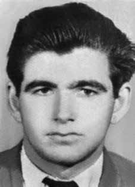

Dênis
Casemiro
CIRCUNSTÂNCIAS DA MORTE
Dênis Casemiro foi localizado e preso pelo delegado Sérgio Fleury, em abril de 1971, quando foi levado para a Delegacia de Ordem Política e Social de São Paulo (DOPS/SP), onde morreu após ter sido torturado durante quase um mês. Há uma ficha do DOPS/SP que registra sua prisão, um relatório assinado pelo próprio Fleury, na qualidade de delegado adjunto, relatando supostas fugas e novo aprisionamento e, por fim, uma requisição para necropsia do corpo de Dênis Casemiro. Nesses termos, manifestou-se Waldemar Andreu, quando do seu em depoimento à Comissão da Verdade do Estado de São Paulo, ao afirmar ter visto e conversado com Dênis pela última vez no DOPS/SP na data de 18 de maio 1971. Segundo Waldemar, o objetivo das forças de repressão era executá-lo. Como na maioria dos casos de desaparecimento forçado, as circunstâncias do crime são ocultadas por documentos e datas falsas, versões inconsistentes e desencontradas. Na certidão de óbito de Dênis Casemiro, por exemplo, figura a data do falecimento como sendo 18 de maio de 1971, fato que pode ser considerado verossímel, visto que a requisição do exame da necropsia e do laudo do IML foram realizados no dia seguinte. O óbito, de acordo com essa documentação, teria ocorrido no Hospital das Clínicas de São Paulo e fora ocasionado por “hemorragia interna traumática” desencadeada por projéteis de arma de fogo. O exame necroscópico, feito pelos médicos legistas Renato Capellano e Paulo Gustavo Rocha, registra cinco “ferimentos pérfuro contusos”, nas seguintes regiões do corpo: tórax, em diferentes partes do abdômen, na mão (atestando também fraturas) e na coxa direita. Os médicos legistas concluíram que sua morte ocorreu “em consequência de anemia aguda consecutiva à hemorragia interna traumática”. A versão policial publicada sobre a morte de Dênis Casemiro foi construída pelo próprio delegado Fleury no dia seguinte à execução. Segundo depoimento de presos políticos da época, Dênis teria sido morto sob torturas, pelo delegado Sérgio Fleury. O laudo assinado pelo legista Renato Capelano apenas descreve a trajetória de projéteis, sem nada falar sobre como estava seu corpo. O relatório encontrado no DOPS/SP, assinado pelo Delegado Sérgio Fleury no dia 19 de maio de 1971, afirma que Dênis, ao tentar fugir, após ter sido preso por sua equipe, recebeu vários disparos efetuados a esmo, não tendo sido o mesmo encontrado naquele dia, mas somente no dia seguinte, ao serem notificados que o militante teria dado entrado na Santa Casa da Ubatuba. O relatório descreve, ainda, que, após tal notícia, seguiram para aquela localidade uma equipe desta delegacia, que, no caminho já encontrou-se acidentalmente com o delegado de polícia de Ubatuba, que, alertado pelo médico que atendeu ao fugitivo, vinha transportando o preso, para que fosse melhor medicado […] A equipe recebeu o preso e rumou com toda a pressa para esta Capital, a fim de que Dênis Casemiro recebesse no Hospital das Clínicas o tratamento de que carecia. Porém, lamentavelmente, ao se aproximarem […] o preso, não resistindo aos ferimentos recebidos, veio a falecer, tendo então sido entregue ao Necrotério do Instituto de Polícia Técnica para as providências de praxe. O corpo de Dênis Casemiro foi encontrado enterrado na vala de Perus como indigente, no Cemitério Dom Bosco, em São Paulo. A idade apontada no livro de registros do Cemitério era de 40 anos de idade, apesar de o atestado de óbito confirmar a sua idade correta, ou seja, 28 anos. Em 1990, a vala foi descoberta e encontradas 1.049 ossadas. De acordo com os registros do cemitério, pelo menos, seis presos políticos deveriam estar enterrados nessa vala, entre eles Dênis Casemiro. Seus restos mortais foram exumados no dia 4 de setembro de 1990, devolvidos aos familiares e enterrados em Votuporanga, no dia 13 de agosto de 1991.
Dénis Casemiro was located and arrested by police chief Sérgio Fleury, in April 1971, when he was taken to the São Paulo Political and Social Order Police Station (DOPS/SP), where he died after being tortured for almost a month. There is a DOPS/SP file that records his arrest, a report signed by Fleury himself, as assistant police chief, reporting alleged escapes and new imprisonment and, finally, a request for an autopsy of Dénis Casemiro's body. In these terms, Waldemar Andreu expressed himself, when he testified to the Truth Commission of the State of São Paulo, when he stated that he had seen and spoken to Dénis for the last time at DOPS/SP on May 18, 1971. According to Waldemar, the objective of the repression forces was to execute him. As in most cases of forced disappearance, the circumstances of the crime are hidden by false documents and dates, inconsistent and mismatched versions. On Dénis Casemiro's death certificate, for example, the date of death appears as May 18, 1971, a fact that can be considered credible, given that the request for the autopsy examination and the IML report were carried out the following day. The death, according to this documentation, would have occurred at the Hospital das Clínicas in São Paulo and was caused by “traumatic internal bleeding” triggered by firearm projectiles. The necroscopic examination, carried out by medical examiners Renato Capellano and Paulo Gustavo Rocha, records five “blunt perforation injuries”, in the following regions of the body: chest, in different parts of the abdomen, on the hand (also showing fractures) and on the right thigh. The coroners concluded that his death occurred “as a result of acute anemia following traumatic internal hemorrhage.” The police version published about Dénis Casemiro's death was created by police chief Fleury himself the day after the execution. According to testimony from political prisoners at the time, Dénis was allegedly killed under torture by police chief Sérgio Fleury. The report signed by coroner Renato Capelano only describes the trajectory of the projectiles, without saying anything about how his body was. The report found at DOPS/SP, signed by Delegate Sérgio Fleury on May 19, 1971, states that Dénis, when trying to escape, after being arrested by his team, received several random shots, not having been found that day, but only the following day, when they were notified that the militant had entered Santa Casa da Ubatuba. The report also describes that, after such news, a team from this police station went to that location, who, on the way, accidentally met the Ubatuba police chief, who, alerted by the doctor who treated the fugitive, had been transporting the prisoner, so that he could be better medicated […] The team received the prisoner and headed quickly to this capital, so that Dénis Casemiro could receive the treatment he needed at the Hospital das Clínicas. However, regrettably, as they approached […] the prisoner, unable to resist the injuries received, died, having then been handed over to the Mortuary of the Technical Police Institute for the usual measures. The body of Dénis Casemiro was found buried in the Perus ditch as a pauper, in the Dom Bosco Cemetery, in São Paulo. The age indicated in the Cemetery's record book was 40 years old, despite the death certificate confirming his correct age, that is, 28 years old. In 1990, the grave was discovered and 1,049 bones were found. According to cemetery records, at least six political prisoners should be buried in this grave, including Dénis Casemiro. His remains were exhumed on September 4, 1990, returned to his family and buried in Votuporanga, on August 13, 1991.
Dénis Casemiro fue localizado y detenido por el jefe de policía Sérgio Fleury, en abril de 1971, cuando fue conducido a la Comisaría de Orden Político y Social de São Paulo (DOPS/SP), donde murió después de haber sido torturado durante casi un mes. Hay un expediente del DOPS/SP que registra su detención, un informe firmado por el propio Fleury, como subjefe de policía, en el que se denuncian supuestas fugas y nuevos encarcelamientos y, finalmente, una solicitud de autopsia del cadáver de Dénis Casemiro. En estos términos se expresó Waldemar Andreu, cuando declaró ante la Comisión de la Verdad del Estado de São Paulo, al afirmar que había visto y hablado con Dénis por última vez en el DOPS/SP el 18 de mayo de 1971. Según Waldemar, el objetivo de las fuerzas de represión era ejecutarlo. Como en la mayoría de los casos de desaparición forzada, las circunstancias del crimen quedan ocultas tras documentos y fechas falsas, versiones inconsistentes y no coincidentes. En el certificado de defunción de Dénis Casemiro, por ejemplo, la fecha de su muerte figura como 18 de mayo de 1971, hecho que puede considerarse creíble, dado que la solicitud del examen de autopsia y el informe del IML se realizaron al día siguiente. La muerte, según esa documentación, habría ocurrido en el Hospital das Clínicas de São Paulo y fue provocada por una “hemorragia interna traumática” provocada por proyectiles de arma de fuego. El examen necroscópico, realizado por los médicos forenses Renato Capellano y Paulo Gustavo Rocha, registra cinco “lesiones por perforación contusa”, en las siguientes regiones del cuerpo: tórax, en diferentes partes del abdomen, en la mano (que también presenta fracturas) y en el muslo derecho. Los forenses concluyeron que su muerte se produjo "como resultado de una anemia aguda tras una hemorragia interna traumática". La versión policial publicada sobre la muerte de Dénis Casemiro fue elaborada por el propio jefe de policía Fleury al día siguiente de la ejecución. Según testimonios de presos políticos de la época, Dénis habría sido asesinado bajo tortura por el jefe de policía Sérgio Fleury. El informe firmado por el médico forense Renato Capelano sólo describe la trayectoria de los proyectiles, sin decir nada sobre cómo estaba su cuerpo. El informe encontrado en el DOPS/SP, firmado por el delegado Sérgio Fleury el 19 de mayo de 1971, afirma que Dénis, al intentar escapar, después de ser detenido por su equipo, recibió varios disparos al azar, no habiendo sido encontrado ese día, sino sólo al día siguiente, cuando fueron notificados que el militante había entrado en la Santa Casa da Ubatuba. El informe también describe que, después de tal noticia, un equipo de esta comisaría se dirigió hacia ese lugar, quien, en el camino, se encontró accidentalmente con el jefe de policía de Ubatuba, quien, alertado por el médico que atendió al prófugo, estaba transportando al detenido, para que fuera mejor medicado […] El equipo recibió al detenido y se dirigió rápidamente a esta capital, para que Dénis Casemiro pudiera recibir el tratamiento que necesitaba en el Hospital das Clínicas. Sin embargo, lamentablemente, al acercarse […] el detenido, al no poder resistir las heridas recibidas, falleció, siendo luego trasladado a la Morgue del Instituto Técnico de Policía para las diligencias habituales. El cuerpo de Dénis Casemiro fue encontrado enterrado en la fosa de Perus como indigente, en el cementerio Dom Bosco, en São Paulo. La edad indicada en el libro de registro del Cementerio era de 40 años, a pesar de que el certificado de defunción confirma su edad correcta, es decir, 28 años. En 1990 se descubrió la tumba y se encontraron 1.049 huesos. Según los registros del cementerio, en esta tumba deberían ser enterrados al menos seis presos políticos, entre ellos Dénis Casemiro. Sus restos fueron exhumados el 4 de septiembre de 1990, devueltos a su familia y enterrados en Votuporanga, el 13 de agosto de 1991.